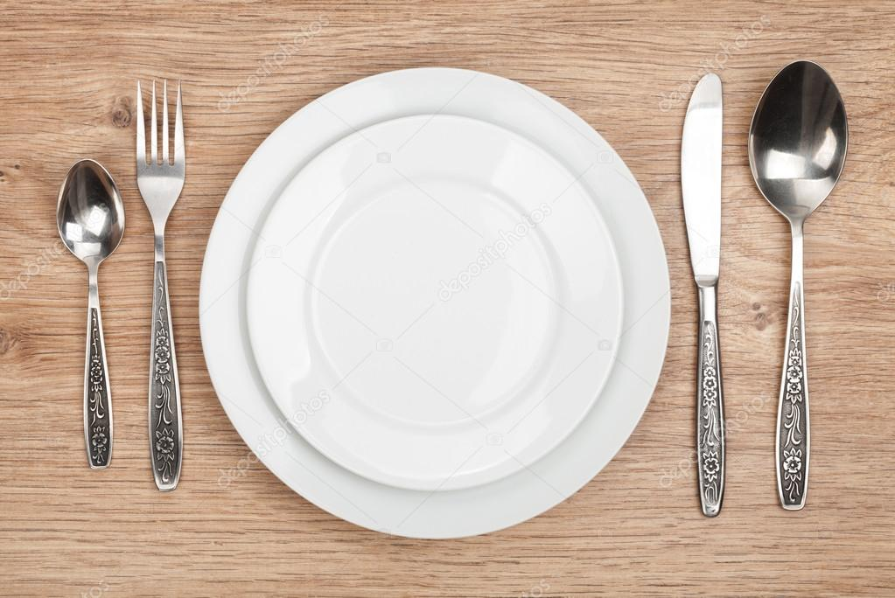
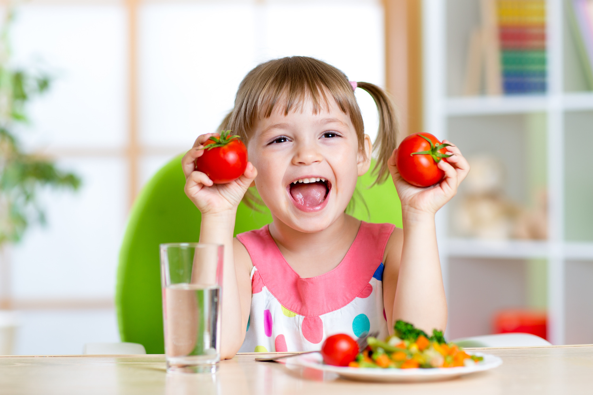
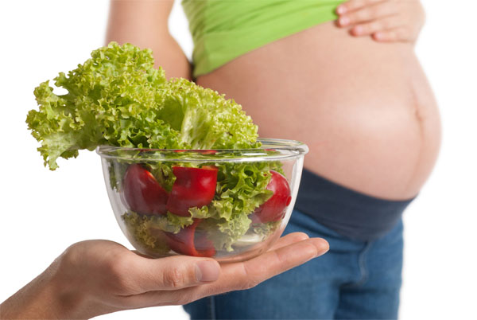
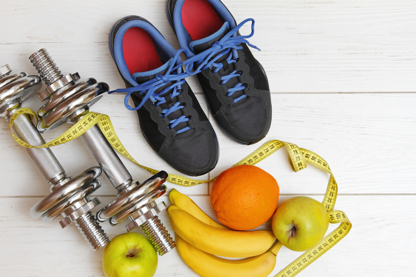

(833) 368 40 40
(833) 368 40 41
NutriVID |
Home |
Sobre Mi |
Servicios |
Testimonios |
|
|  | |||||
SOBRE MI |
Me llamo Brandon Daniel Domínguez Esparza, tengo 21 años de edad, estudio la carrera de Ingeniería en Sistemas Computacionales y Electrónicos cursando actualmente el octavo cuatrimestre. En esta sección les facilitaré las mejores dietas que sean de su agrado y las que más consideren para su alimentación y cuidado de salud, también para que tus hijos tengan una muy buena alimentación tambié se darán rutinas de ejercicio para mantenerse en forma, incluso se tomó en cuenta para las mujeres embarazadas. |
||||
| SERVICIOS |  Nutrición Infantil Lo más recomendado para los niños es el consumo de frutas y verduras a diario, el consumo de azúcar debe ser muy bajo por lo que se recomienda que el consumo de refresco sea muy bajo |
 Nutrición para el Embarazo Cada fase del embarazo requiere unas necesidades nutricionales concretas tanto de energía como de micronutrientes, tanto para la madre como para el futuro bebé. Es un gran momento para poner especial énfasis en la alimentación. |
 Nutrición Deportiva Siempre se come antes, durante y después del ejercicio puede influir en el rendimiento. Una dieta bien planificada sustentará su programa de entrenamiento y le ayudará a recuperarse más rápidamente, reduciendo su riesgo de lesionarse. También es necesario comer para conservar su buena salud y reducir su riesgo de enfermedades o de entrenamiento excesivo. |
||
| TESTIMONIOS | "Nunca pude llegar a creer que seguir una dieta de ejercicio me ayudaría mucho, me gustó mucho el servicio que se brindó;, mi alimentación ha mejorado además de que ahora me siento con más sanidad para poder realizar actividades que no podía hacer hace tiempo." |
||||
Contáctame
Para más información les brindo mis redes sociales, correo electrónico y números de teléfono en caso de que tengan dudas sobre el servicio que se brindará
| NutriVID | |
| @NutrVID | |
| @Nutri_VID | |
| nutrition-vid@gmail.com | |
(833) 368 40 40 (833) 368 40 41 |
|
| 833 180 10 49 |